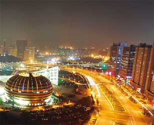

China: Beijing is the capital of the People's Republic of China and China's second largest city - home to more than 17 million residents. The city is familiar as the political, educational and cultural centre of China and described in the Encyclopaedia Britannica as "one of the world's great cities.
By doing an internship in China you have the unique possibility to gain work experience in a country which represents the largest economic powerhouse, in terms of growth, in the world today. Considering the hurriedly growing importance of the Chinese economy within the global marketplace, an internship placement with a local or multinational company will considerably add-value to your CV and future career possibilities.
To enable students to achieve their aim of finding an internship assignment in China, even though they might only have little time to go through an extensive application process, Ideal Undergraduates offers a high-quality internship placement service for China. Our mission is to provide you with high-quality internship assignments that will help and enable you. Therefore we take various scenarios into reason before final internship placements are made.